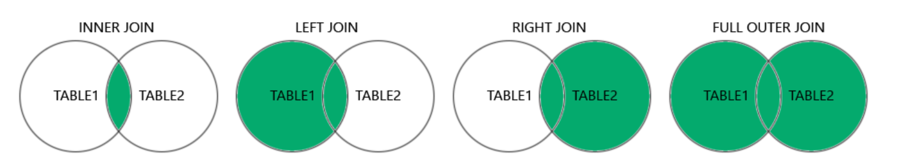

| id | name |
|---|---|
| 101 | Omar |
| 102 | Layla |
| 103 | Alex |
Lecture 19
Monday - Oct 27, 2025
Homework 6 - Creating a database - due 10/19, SUN
Homework 7 - Joins and more - due 10/26, SUN
| Module | Week | Date | Day | Notes and Lectures | Activities and due dates |
|---|---|---|---|---|---|
| SQL | 11 | 10/27 | Mon | L19:SQL Joins | |
| SQL | 11 | 10/29 | Wed | L20:SQL Joins | |
| SQL | 11 | 10/31 | Fri | Last day to withdraw | |
| SQL | 12 | 11/3 | Mon | L21:SQL Joins | |
| SQL | 12 | 11/4 | Tue | University closed (Elections) | |
| SQL | 12 | 11/5 | Wed | L22:SQL Joins | |
| SQL | 12 | 11/9 | Sun | HW8:SQL Funhouse | |
| SQL | 13 | 11/10 | Mon | L23:Aggregates 1 |

SELECT
columns_or_expressions -- Choose specific columns or expressions to return
FROM
table1
JOIN_TYPE JOIN table2 ON join_condition
-- join_type can be: INNER, LEFT, RIGHT, or FULL JOIN with join condition
JOIN_TYPE JOIN table3 ON join_condition -- Additional joins as needed
WHERE
filter_condition -- Filter rows based on a condition
GROUP BY
column1, column2, ... -- Group rows based on one or more columns
HAVING
aggregate_condition -- Filter groups using aggregate functions (like COUNT, SUM, etc.)
ORDER BY
column1 [ASC|DESC], column2 [ASC|DESC], ... -- Sort the final result set
LIMIT
number_of_rows; -- (Optional) Limits the number of rows returneddrop table if exists peopleskills;
drop table if exists people;
create table people (
id int,
name varchar(20) NOT NULL,
primary key(id)
);
insert into people (id,name) values
( 101,'Omar'),
( 102,'Layla'),
( 103,'Alex');
drop table if exists skills;
create table skills (
id int primary key,
name varchar(20) NOT NULL
);
insert into skills (id,name) values
( 201,'Jumping'),
( 202,'Skipping'),
( 203,'Coding')
;People - contains a simple ID and name
Skills - contains a simple ID and name
I PURPOSEFULLY am using the same field names in each table. This will force us to more carefully specify fields in our queries.
I suggest that you try these commands in VS Code.
Note that you may already have tables using the same names in your existing schema! You need to delete the old tables to clear out the entire schema.
When deleting old tables, look out for foreign key constraint errors.
the * returns all fields across all tables without having to name them.
Returns all combinations of records across both tables
Note that the names match in these slides.
| id | name | id | name |
|---|---|---|---|
| 103 | Alex | 201 | Jumping |
| 102 | Layla | 201 | Jumping |
| 101 | Omar | 201 | Jumping |
| 103 | Alex | 202 | Skipping |
| 102 | Layla | 202 | Skipping |
| 101 | Omar | 202 | Skipping |
| 103 | Alex | 203 | Coding |
| 102 | Layla | 203 | Coding |
| 101 | Omar | 203 | Coding |
A key part of database design is properly translating our ER diagrams to SQL.
We spent lots of time talking about cardinality and participation, that is, how different entities connect to each other.
Learning how to represent cardinality and participation in SQL is critical to your success as a database engineer.
We’ve been using keys to make these connections in our ER diagrams.
Think about our options for connecting people and skills.
A person MUST have one and only one skill.
A person may have one skill or no skills.
A person can have many skills (more than one).
How would you code these instances in SQL?
erDiagram
PEOPLE {
int id PK
varchar name
int skill_id FK
}
SKILLS {
int id PK
varchar name
}
PEOPLE o|..|o SKILLS : "has"
drop table if exists people;
create table people (
id int primary key,
name varchar(20) NOT NULL,
skills_id int NULL,
foreign key (skills_id) references skills(id)
on delete set NULL
on update cascade
);
insert into people (id,name, skills_id) values
( 101,'Omar', 201),
( 102,'Layla', NULL),
( 103,'Alex', 203);We’re adding skills_id to people so that each person can track none-or-one skills.
The foreign key constraint tells the database what happens to the skills_id field when the matching record in skills is changed.
| id | name | skills_id | id | name |
|---|---|---|---|---|
| 101 | Omar | 201 | 201 | Jumping |
| 103 | Alex | 203 | 203 | Coding |
INNER JOIN only returns records that match in BOTH tables. If no match, nothing is returned.
| id | name | skills_id | id | name |
|---|---|---|---|---|
| 101 | Omar | 201.0 | 201.0 | Jumping |
| 102 | Layla | None | ||
| 103 | Alex | 203.0 | 203.0 | Coding |
LEFT JOIN requires that all records from the first (left) table MUST be listed at least once.erDiagram
PEOPLE {
int id PK
varchar name
int skill_id FK
}
SKILLS {
int id PK
varchar name
}
PEOPLE o|..|o SKILLS : "has"
erDiagram
PEOPLE {
int id PK
varchar name
}
PEOPLESKILLS{
int ID PK
int people_id FK
int skills_id FK
}
SKILLS {
int id PK
varchar name
}
PEOPLESKILLS }o..o{ PEOPLE : "has"
PEOPLESKILLS }o..o{ SKILLS : "has"
Moving from none-to-one to one-to-many requires a helper table.
To model this case, we added a foreign key directly into the people table.
This approach pollutes the people table. It now contains non-people related information.
We can only have non-or-one skills.
How can we have more than one skill?
To model MANY we add a helper (join) table that serves to associate people and skills.
drop table if exists peopleskills;
create table peopleskills (
id int auto_increment primary key,
people_id int NOT NULL,
skills_id int NOT NULL,
foreign key (people_id) references people(id)
on delete cascade on update cascade,
foreign key (skills_id) references skills(id)
on delete cascade on update cascade
);We remove any skills references from people, unpolluting it.
We associate people with skills through this table.
More records means MANY connections.
Moving from none-to-one to one-to-many requires a helper table.
drop table if exists peopleskills;
create table peopleskills (
id int auto_increment primary key,
people_id int NOT NULL,
skills_id int NOT NULL,
foreign key (people_id) references people(id)
on delete cascade on update cascade,
foreign key (skills_id) references skills(id)
on delete cascade on update cascade
);
insert into peopleskills (people_id,skills_id) values
(101, 201),
(103, 203);drop table if exists peopleskills;
create table peopleskills (
id int auto_increment primary key,
people_id int NOT NULL,
skills_id int NOT NULL,
foreign key (people_id) references people(id)
on delete cascade on update cascade,
foreign key (skills_id) references skills(id)
on delete cascade on update cascade
);
insert into peopleskills (people_id,skills_id) values
(101, 201),
(101, 202),
(103, 201),
(103, 203);people-skill pairs.
| id | people_id | skills_id | name | name |
|---|---|---|---|---|
| 1 | 101 | 201 | Omar | Jumping |
| 3 | 103 | 201 | Alex | Jumping |
| 2 | 101 | 202 | Omar | Skipping |
| 4 | 103 | 203 | Alex | Coding |
drop table if exists peopleskills;
create table peopleskills (
id int auto_increment primary key,
people_id int NOT NULL UNIQUE,
skills_id int NOT NULL UNIQUE,
foreign key (people_id) references people(id)
on delete cascade on update cascade,
foreign key (skills_id) references skills(id)
on delete cascade on update cascade
);
insert into peopleskills (people_id,skills_id) values
(101, 201),
(101, 202),
(103, 201),
(103, 203);Using UNIQUE on people_id or skills_id enforces that only one value can exist in the peopleskills table.
A person can only be listed in people-skills only once.
A skill can only be listed in people-skills only once.
The INSERT statement above will throw errors because of the duplicate 101, 103 and 201 values.
drop table if exists peopleskills;
create table peopleskills (
id int auto_increment primary key,
people_id int NOT NULL UNIQUE,
skills_id int NOT NULL UNIQUE,
UNIQUE (people_id, skills_id),
foreign key (people_id) references people(id)
on delete cascade on update cascade,
foreign key (skills_id) references skills(id)
on delete cascade on update cascade
);
insert into peopleskills (people_id,skills_id) values
(101, 201),
(101, 202),
(101, 201);Using UNIQUE keyword on multiple values, tells the DBMS to check and toss an error if duplicate pairs are found.
This is enforced on INSERTs and UPDATES.
The INSERT statement will throw an error on 101-201
drop table if exists peopleskills;
create table peopleskills (
id int auto_increment primary key,
people_id int NOT NULL,
skills_id int NOT NULL,
foreign key (people_id) references people(id)
on delete cascade on update cascade,
foreign key (skills_id) references skills(id)
on delete cascade on update cascade
);
insert into peopleskills (people_id,skills_id) values
(101, 201),
(101, 202),
(103, 201),
(103, 203);UNIQUE - cardinality: 1 or many
NOT NULL or NULL - participation
What happens with different combos of UNIQUE, NOT NULL?
drop table if exists peopleskills;
create table peopleskills (
id int auto_increment primary key,
people_id int NOT NULL,
skills_id int NOT NULL,
UNIQUE (people_id, skills_id),
foreign key (people_id) references people(id)
on delete cascade on update cascade,
foreign key (skills_id) references skills(id)
on delete cascade on update cascade
);
insert into peopleskills (people_id,skills_id) values
(101, 201),
(101, 202),
(101, 201);Using UNIQUE keyword on multiple values, tells the DBMS to check and toss an error if duplicate pairs are found.
This is enforced on INSERTs and UPDATES.
The INSERT statement will throw an error on 101-201
A join table is the preferred way to model relationships in SQL.
Using appropriate modifiers NULL, NOT NULL, and UNIQUE we can model:
Keeping relationships in a join table minimizes pollution in the primary tables
Keeping relationships outside of database promotes easier UI/UX development.
Issue Ensuring that every person has at least one skill, or that every skill is used at least once.
Solution We need a way to verify that every people_id is listed at least once in people_skills and/or every skills_id is listed at least once in people_skills
Notes
We spend the rest of the class working examples.
Refer to the video for details.
Homework 6 - Creating a database - due 10/19, SUN
Homework 7 - Joins and more - due 10/26, SUN
| Module | Week | Date | Day | Notes and Lectures | Activities and due dates |
|---|---|---|---|---|---|
| SQL | 11 | 10/27 | Mon | L19:SQL Joins | |
| SQL | 11 | 10/29 | Wed | L20:SQL Joins | |
| SQL | 11 | 10/31 | Fri | Last day to withdraw | |
| SQL | 12 | 11/3 | Mon | L21:SQL Joins | |
| SQL | 12 | 11/4 | Tue | University closed (Elections) | |
| SQL | 12 | 11/5 | Wed | L22:SQL Joins | |
| SQL | 12 | 11/9 | Sun | HW8:SQL Funhouse | |
| SQL | 13 | 11/10 | Mon | L23:Aggregates 1 |
CMSC 408 - Databases